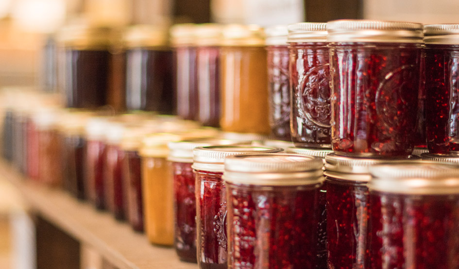
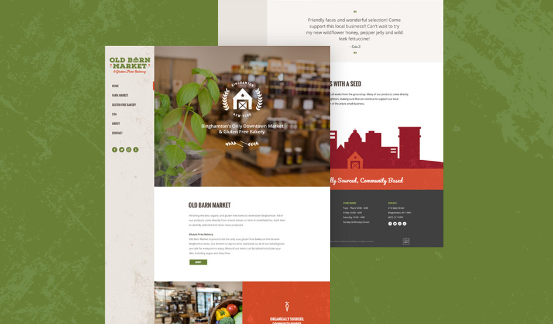
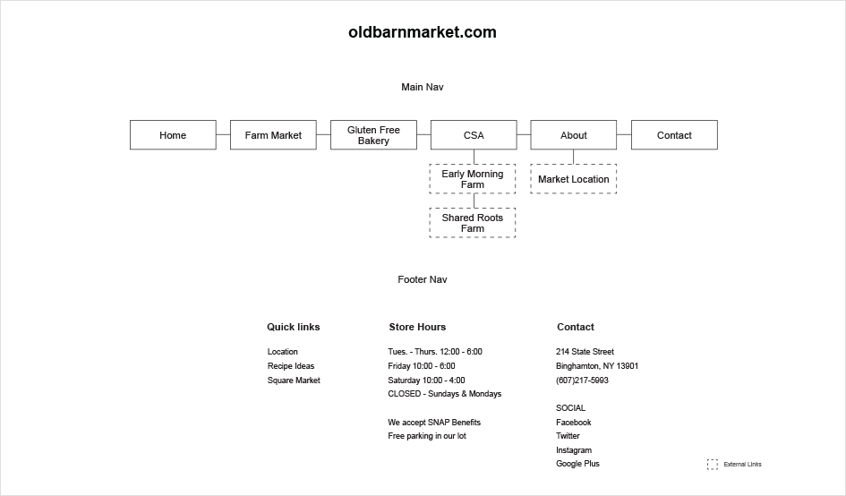
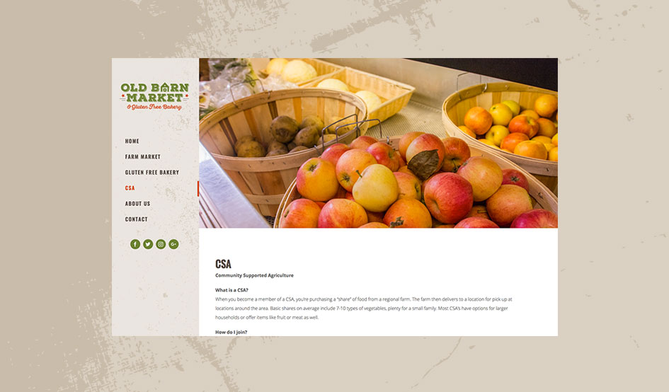
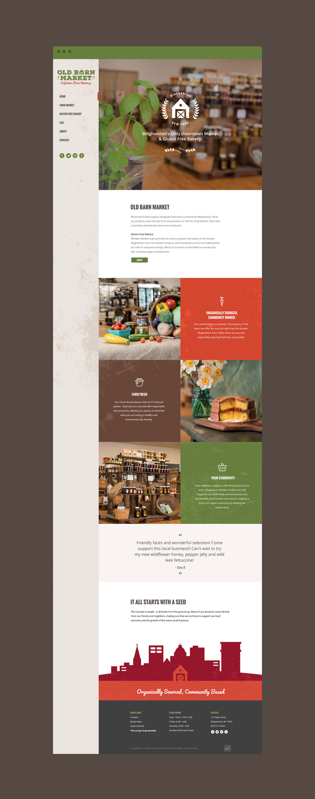

Old Barn Hollow is a local indoor farmers market and gluten free bakery.
Lead designer. Development support. Made with Idea Kraft Team.
Old Barn Market was a very unique project. In 2017 at Idea Kraft we decided to hold a contest to give back to our local community. The contest would give a lucky business a complete re-brand in one pro bono weekend. 18 entries were submitted but only three finalists were chosen. After two weeks and 7,000+ votes Old Barn Market was crowned as our winner.
Old Barn homepage
Since we only had one weekend to complete this project, we have to work quickly, communicate clearly, and check in with the client often. We started with a review of their current website. It was overwhelming and lacked hierarchy of information. We also noticed that there was an inconsistency with content on the website. We were tasked with simplifying and reorganizing their copy.
New site map
To develop this website we elected to use a WordPress theme as the framework for the website. This would allow the responsive development to be completed faster. Since the website was being handed off at the end of the project, the theme also allows for an easy way for the client to make their own updates. Even though we used a theme for the development side, we still created custom layouts that fit the feel of Old Barn Markets unique hometown feel.
Sidebar Navigation
After the multiple meetings we had with the client, we really wanted to focus on the rustic, but clean feel for the website. Since the hierarchy was one of the main problems of the website, we split pages up into separate sections to better organize the content. These separate sections added grunge textures that achieved the farm and dirt feel they were looking for. Another main focus of the website was the Gluten Free Bakery menu. We placed the different sections in tabs so, the content wouldn’t overwhelm the viewers. Overall, we were able to provide the client with a relatively simple website that was easier to read and matched the feel of the new branding.
Old Barn Market full homepage
View Website